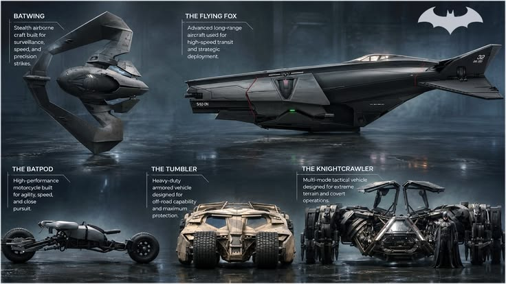
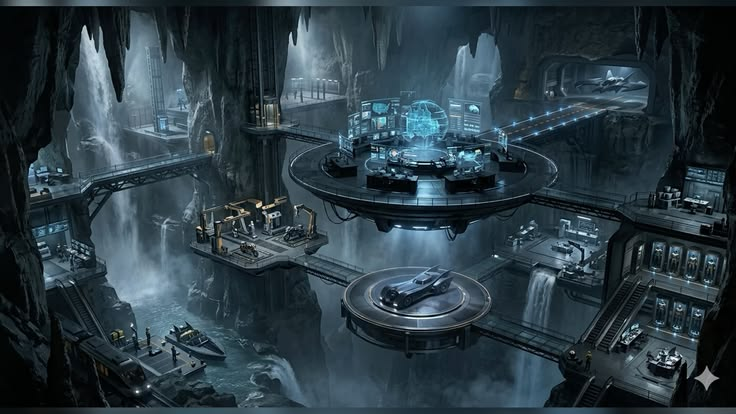

GOTHAM CITY DEFENSE SYSTEM
I AM THE
NIGHT
Beyond the billionaire philanthropist lies Gotham's ultimate guardian. Move your cursor to pierce the darkness.
SCROLL FOR REVEAL
Beyond the billionaire philanthropist lies Gotham's ultimate guardian. Move your cursor to pierce the darkness.
As you scroll through Gotham's shadows, the mask slips to reveal the man beneath.
Vigilante of Gotham City, symbol of fear for criminals, equipped with cutting-edge tech and unbreakable resolve.
Billionaire CEO of Wayne Enterprises, philanthropist, living a dual life to fund the war on Gotham's underworld.


Major tactical events and crisis files recorded in the Batcomputer mainframes.
OPEN FULL TIMELINE ARCHIVEBruce Wayne returns to Gotham after years of global training. The Bat-Signal is lit for the first time as corruption is challenged.
Mob wars crumble and Gotham's theatrical Rogues rise. Harvey Dent falls, transforming into the tragic villain Two-Face.
Bane executes an Arkham Asylum breakout, orchestrating maximum chaos before confronting Batman in the Batcave.
Gotham is converted into a mega-prison facility. Batcomputer operates on Protocol 10 readiness mode.
High-density custom titanium alloy batarangs featuring electro-shock, sonic disruption, and remote explosive variants.
Gas-powered magnetic line launcher capable of lifting up to 800 lbs vertically at high speeds for rapid rooftop ascent.
Direct emergency beacon to Commissioner Gordon's hotline & Batcave Terminal.
Have an idea or just want to explore my work? Feel free to connect with me.